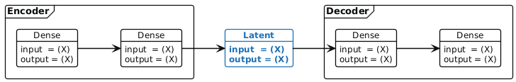
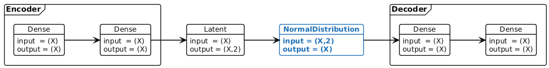
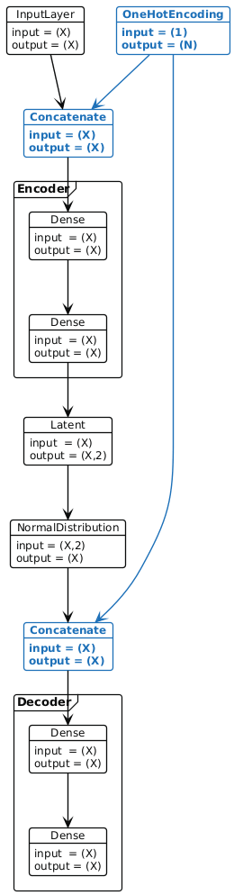
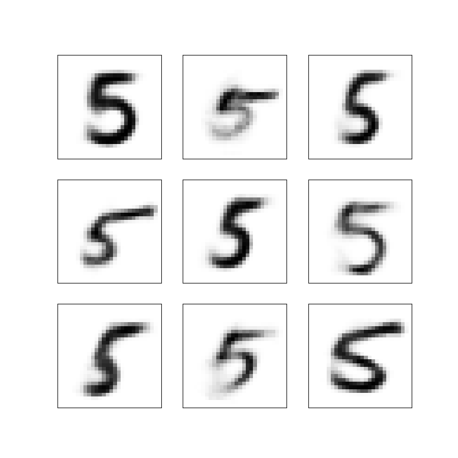
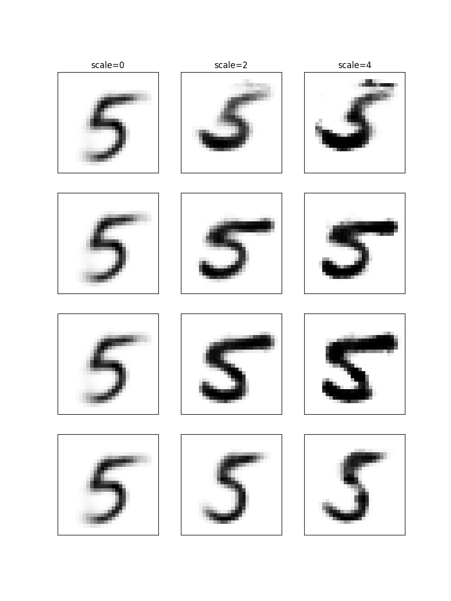
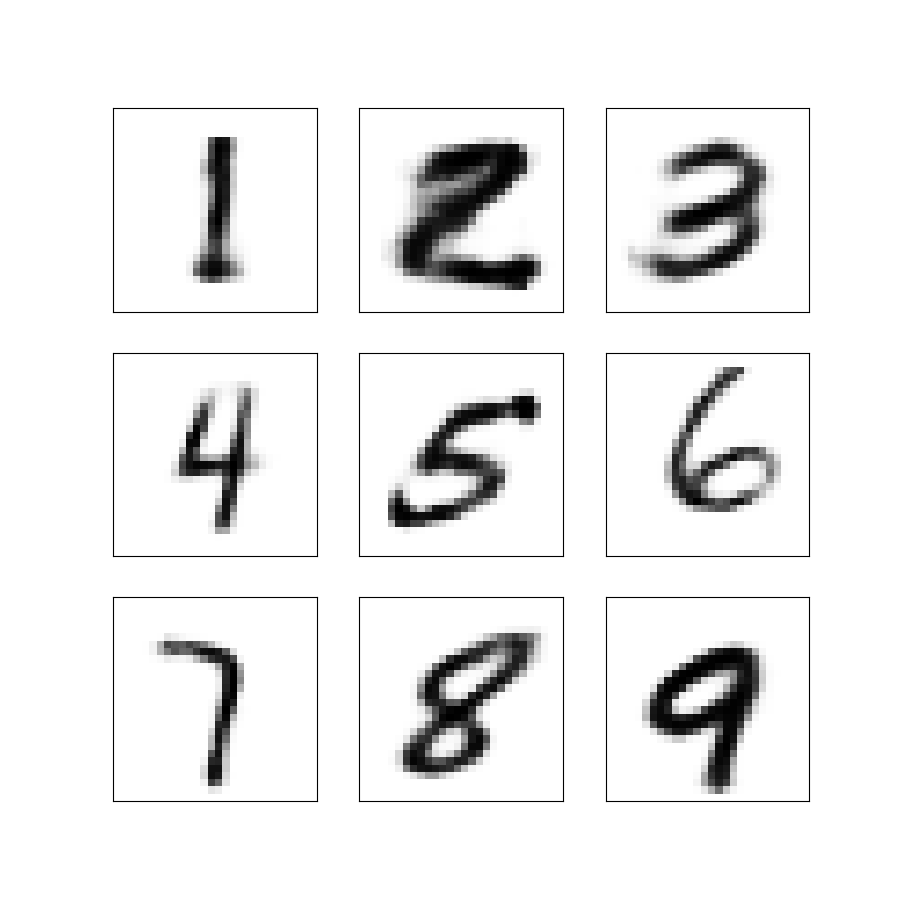
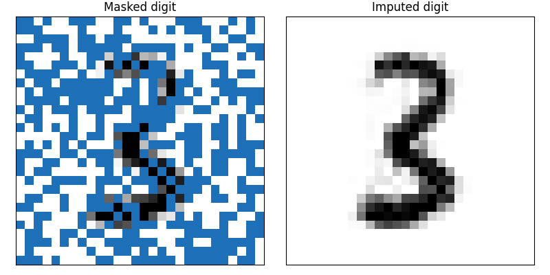

AANN 18/04/2026
Table of Contents
Autoencoders for computational statistics
Overview
I recently read a couple of papers from Elizaveta Semenova, PriorVAE and PriorCVAE, where a decoder (from an autoencoder) is used as a surrogate in sampling from a computationally expensive Gaussian process prior. This is a cool idea, and is definitely something to keep in mind if your doing MCMC with a spatial model, but in this post I just want to look at the autoencoder part. I'll use MNIST digits as a friendly dataset.
Background
(Variational and conditional) autoencoders
A vanilla autoencoder (neural network) has two subnetworks: an encoder, which takes a high-dimensional vector \(x\) (for example a flattened \(28\times 28\) image) and maps it to a low-dimensional representation \(h\); and a decoder, which takes that low-dimensional representation \(h\) and maps it to a reconstruction \(\hat{x}\) of the original high-dimensional vector \(x\). In learning how to map data into lower dimensions, and then recover it, the autoencoder learns to perform dimensionality reduction. In Figure 1 there is an example of an autoencoder.

Figure 1: Example of the autoencoder architecture.
In a variational autoencoder (VAE), the lower dimensional representation is a distribution (typically a Gaussian distribution). I.e. the encoder maps \(x\) to \((\boldsymbol{\mu},\boldsymbol{\sigma}^{2})\) (the parameters of a multivariate Gaussian distribution), then the decoder takes a sample from that distribution, \(z\sim\text{N}(\boldsymbol{\mu},\boldsymbol{\sigma}^{2})\), and maps it to a reconstruction \(\hat{x}\)1. As we will see below, the loss function for training a VAE tries to keep this latent Gaussian distribution as close to a standard normal as possible. In Figure 2 there is an example of the VAE architecture.

Figure 2: Example of the variational autoencoder architecture. Note that in the blue NormalDistribution node, we sample a random vector to pass to the decoder.
In a conditional VAE we assume that there is some additional conditioning information \(c\) associated with each datum \(x\). In this case, the decoder takes the (concatenated) vector \((z,c)\) and maps it to the reconstruction \(\hat{x}\).

Figure 3: Example of the conditional variational autoencoder architecture. Note that in the conditional version, we concatenate a one-hot-encoding of the class label (or a generic context vector) to the sample from the latent space before passing it to the decoder.
Loss function
There are two terms in the loss function for training a VAE: the reconstruction loss, which measures the error in the reconstruction \(\hat{x}\) of the truth \(x\), in our example I use the binary cross entropy; and the regularization loss, which measures how far the latent distribution is from a standard normal, in this example I use the Kullback-Leibler divergence (which can be computed in closed form between Gaussian distributions).
Implementation
There is an implementation of the (C)VAE and the binary cross entropy loss function here.
Example
Looking at the data
Training a VAE on 5s
I trained the VAE shown in Figure 2 to sample novel instances of the digit 5. The training process is pretty straight forward so you might be best off just looking at the script implementing it, and the script that samples from the trained model. Some samples from the trained model are shown in Figure 5.

Figure 5: Nine synthetic images obtained by sampling from the latent Gaussian distribution and decoding the sample into an image.
Note that these images are not part of the training data. We have sampled new latent vectors from the standard normal distribution and used these as input to the decoder to get the images. Using the standard normal as our source of random variables is why it is important to have the KL-divergence term in the loss function.
Exploring generalization
If you were to use one of these trained decoders as a way to sample from your prior distribution, as in PriorVAE and PriorCVAE papers, you'd want to have some confidence the decoder behaves sensibly across the region of parameter space the MCMC is likely to visit. To test this, I sampled random directions and then looked at the images generated as you moved in that direction (i.e. scaled a random vector by a factor of 0, 2 and 4). In Figure 6, examples of the generated images are shown, while the images degrade slightly, the digits are still vaguely five shaped.

Figure 6: Images taking increasingly extreme values of the latent space
Training a conditional VAE on all the digits
I trained the CVAE shown in Figure 3 to sample novel instances of all of the digits. Again, the training process is straight forward so you might be best off just looking at the script implementing it, and the script that samples from the trained model. Some samples from the trained model are shown in Figure 7.

Figure 7: Nine synthetic images of the digits 1–9 obtained by sampling from the latent Gaussian distribution and decoding the sample into an image.
TODO Use as a prior
To get an idea for how the CVAE decoder works as a prior distribution within MCMC, we can consider the case where we start with a partial observation of a number and want to estimate what the rest of it looked like (and what number it is!)
We start by taking one of MNIST digits (from the testing set), and generating a random mask of pixels to observe. In Figure 8 (left) there is a masked number three. We then set up our Numpyro model of this process of masking and observation with noise. A pobabilistic program for this might look like the following:
- \(\theta\sim\text{N}(0,1)\)
- \(z\leftarrow\theta[\texttt{1:15}]\)
- \(c\leftarrow\text{softmax}(\theta[\texttt{16:25}])\)
- \(\mu_Y\leftarrow\text{Decoder}(z,c)\)
- \(Y[\texttt{mask}]\sim\text{N}(\mu_Y[\texttt{mask}], {0.1}^2)\)
We then sample from it and look at the posterior mean to understand what the digit is likely to be. In Figure 8 (right) there is an image of the posterior mean of the digit. The code for this is available here.

Figure 8: Using the CVAE as a prior distribution we can recover the missing pixels from a masked image. Partially masked digit given as input to the MCMC. The posterior mean of the samples for the missing pixels.
TODO Discussion
In this post I built a (conditional) variational autoencoder to provide a mapping between the standard multivariate normal distribution and the space of images of digits. This approach has been used in spatial epidemiology to provide a computationally efficient way to work with Gaussian processes. Basically, you swap an array of pixels for a field that has been evaluated on a mesh, but the same idea can be applied to other kinds of complex high-dimensional prior distributions. This is a cool example of where "classical" machine learning can be applied in statistics.
TODO Thanks
Thank you for reading this post. Please get in touch if you have any feedback :)
Footnotes:
In practice, this uses the reparameterization trick to avoid numerical difficulties. This is important, but perhaps less interesting.